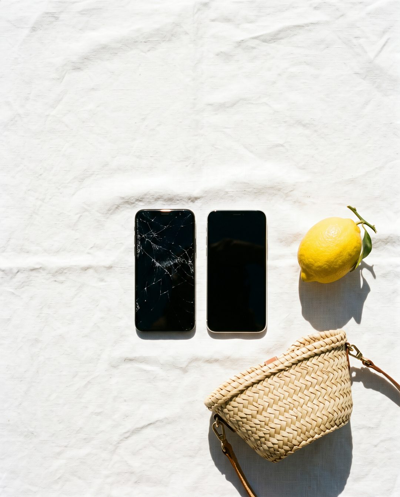

Новый айфон
без нервов
Пара вопросов, и дальше по шагам
Есть ли уже копия в iCloud?
На старом: Настройки → своё имя → iCloud → Резервная копия. Там дата последней копии.
Из копии iCloud
- Включи новый айфон и иди по настройке до экрана «Перенос приложений и данных».
- Выбери «Из копии iCloud» и войди своим Apple ID.
- Выбери копию с самой свежей датой.
- Держи телефон на Wi-Fi и на зарядке, пока докачиваются фото и приложения. Может занять вечер.
Старый экран реагирует на касания?
Смахни и потыкай по живой части.
С телефона на телефон
Напрямую, iCloud и копия не нужны.
- Заряди оба телефона, лучше держи на проводе.
- Новый айфон стоит на самом первом экране настройки. Уже настроила — сбрось: Настройки → Основные → Перенос или сброс iPhone → Стереть контент и настройки.
- На старом включи Wi-Fi и Bluetooth. Положи телефоны рядом.
- На старом всплывёт «Настроить новый iPhone». Нажми «Продолжить».
- Наведи камеру старого на облачко на новом. Камера не видит — «Аутентифицировать вручную» и код.
- Пароль от старого телефона вводишь уже на новом, там экран целый.
- Выбери «Перенести с iPhone». Не трогай телефоны, от 20 минут до пары часов.
Голосом и пальцем
VoiceOver зачитывает кнопки вслух, так нажимается та, которую не видно.
- Скажи старому: «Привет, Siri, включи VoiceOver».
- Веди пальцем по живой части экрана. Телефон называет кнопки по очереди.
- Услышала «Продолжить» — тапни дважды в любом месте живой части.
- Дальше по шагам переноса с телефона на телефон.
- После переноса: «Привет, Siri, выключи VoiceOver».
Siri молчит?Значит, она выключена на старом, и голосом VoiceOver не включить. Тогда в сервис.
В сервис
Без живого экрана перенос руками не сделать: старый просит нажать «Доверять» и ввести пароль.
- Возьми оба телефона и зарядку.
- Иди в GSM Store, где покупала, и попроси перенести данные со старого на новый.
- Пароль от старого вводи сама, никому не говори.
Экран менять не обязательноМастер может подключить рабочий экран на время переноса.
Проверить после переноса
- Фото на месте. Видно не все — подожди, докачиваются из iCloud.
- Телеграм: войди по номеру, код придёт в Телеграм на макбуке.
- WhatsApp открылся со всей перепиской.
- Банки. Тех, что убрали из App Store, может не оказаться, их ставят через сайт банка.
- Старый телефон не стирай, пока всё не проверишь.
Не выходи из Телеграма на макбукеПока не вошла на новом телефоне, код придёт туда.
Телеграм на макбуке
- В App Store на макбуке найди Telegram с синей иконкой-самолётиком и установи.
- Открой его, на экране будет QR-код.
- На телефоне в Телеграме: Настройки → Устройства → Подключить устройство, наведи камеру на код.
- Чаты подтянутся сами, вместе с группой школы.
Как писать удобно
ОтправитьEnter
Новая строкаShift + Enter
Голосовоезажать микрофон справа внизу
Скрин в чатCmd + Ctrl + Shift + 4 выделить Cmd + V
Найти чатCmd + K
Ответитьправый клик по сообщению
Галочки запоминаются на этом телефоне